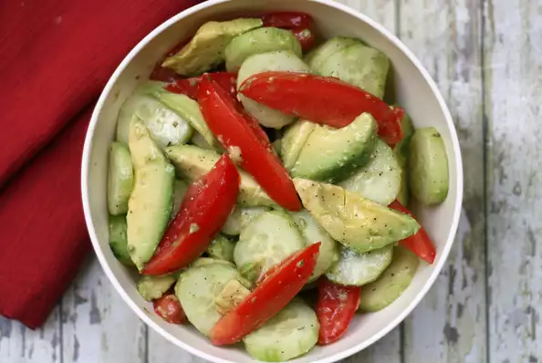

Avocado Tomato Salad with Cucumber

This is a fusion between Greek, Italian, and Latin cultures. This salad can add a healthy, yet very hearty, satisfying blend to any dinner. It is sure to release all of those endorphins including dopamine that make you feel great after pigging out at a fast food or a comfort food dinner but staying as healthy as can be. How many recipes can make that claim? Well this one can!
INGREDIENTS
- 5 medium avocados - halved, peeled, and pitted
- 2 large cucumbers, ends trimmed
- 4 medium Roma tomatoes
- ¼ cup rice wine vinegar
- ¼ cup Italian salad dressing
- ¼ teaspoon dried oregano leaves
- ¾ teaspoon freshly ground black pepper, or to taste
- ½ teaspoon sea salt, or to taste
STEPS
- Cut avocados into wedges. Peel cucumbers, if desired, and cut into slices. Core tomatoes and cut into wedges. Transfer all to a bowl.
- Add vinegar, Italian dressing, oregano, pepper, and salt; mix until well combined. Taste and adjust seasonings.
Back to Home